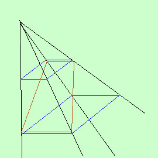

|
 Domanda: Se il poligono di base e' un rettangolo come posso fare il triedro? Il poligono di base e' una nostra costruzione; puoi benissimo farlo in modo da ottenere un quadrilatero che non sia un rettangolo: guarda la figura qui a lato: Invece di considerare le figure in blu puoi considerare la figura in rosso |